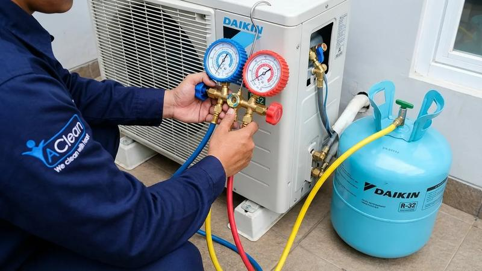
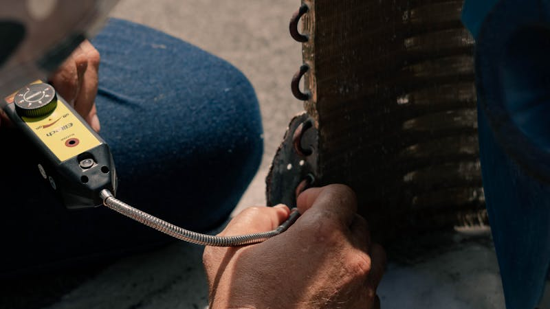
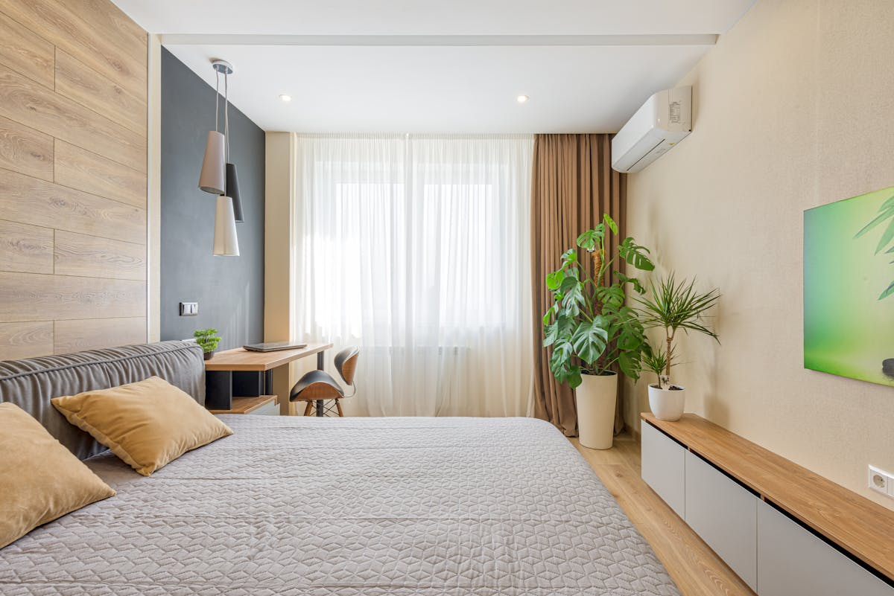

Layanan Service AC Graha Raya Terlengkap
Kami melayani semua kebutuhan AC di Graha Raya Bintaro — dari perawatan rutin, isi freon, perbaikan, hingga instalasi AC baru untuk perumahan modern.

Cuci / Cleaning AC
Pembersihan menyeluruh unit indoor & outdoor. Evaporator, kondensor, dan filter AC bersih optimal — AC kembali dingin maksimal.

Isi Freon Original Daikin
Pengisian freon R-32, R-410A, dan R-22 menggunakan freon original Daikin bersertifikat. AC kembali dingin, garansi 14 hari.

Pasang AC Baru
Instalasi AC baru untuk rumah baru atau renovasi di Graha Raya Kencana. Termasuk instalasi pipa, kabel, dan bracket outdoor rapi.

Service Besar AC
Bongkar total unit indoor dan outdoor. Cocok untuk AC yang sudah lama tidak diservice atau performa drop signifikan.

Bongkar Pasang AC
Pindahan ke rumah baru atau renovasi? Bongkar pasang AC dengan pemvakuman ulang dan pengecekan freon. Rapi dan aman.

Perbaikan AC Bocor
AC bocor air di dalam ruangan? Cek penyebab — bisa drain tersumbat, evaporator kotor, atau instalasi miring. Selesai dalam 1 kunjungan.